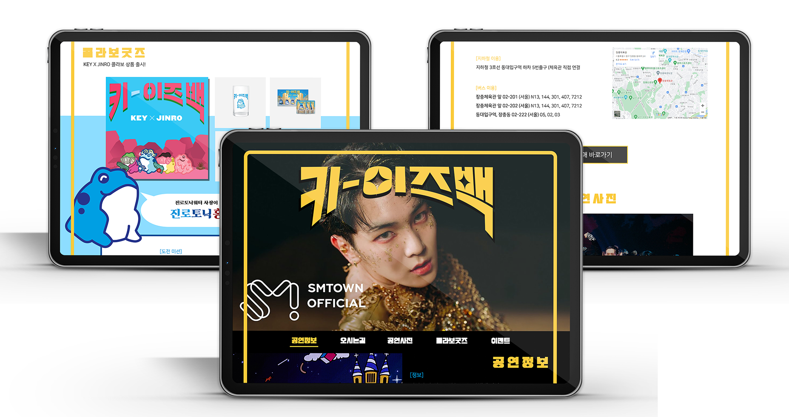

키-이즈백
이벤트 풀페이지
자체 제작

키-이즈백
이벤트 풀페이지
자체 제작
공연의 기본적인 정보와 함께 흥미를 유발하는 콜라보굿즈, 이벤트 등을 포함하는 샤이니 키의 정규 2집 컴백 기념 콘서트를 홍보하는 풀페이지를 제작하였습니다
포인트가 되는 로고와 타이틀은 평창평화체를 사용하였고 직선적인 느낌과 명료한 가독성이 장점인 나눔스퀘어를 본문으로 사용하였습니다
키의 컴백 앨범의 타이틀의 색상과 진로의 대표 색상을 포인트 컬러로 사용하여 화면의 단조로움을 피했습니다